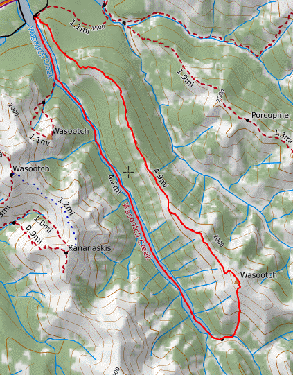

2021-1-27
I finished my RCM level 10 exam a couple weeks ago. Thanks to the covid pandemic, I was able to submit my repotoire as a youtube link. A silver lining you could say. The online exam with techniques, etudes, and ear training went surprisingly well. While I feel like I could haved played better in my recording of repotoire, I'm satisfied with whatever the ultimate results of the exam are.
I'm unsure whether I want to continue or not with violin. Every time I play I just feel inferior to the people who practive 8+ hours a day. CYO is so much fun though. I don't know what to do.
School starts again in a couple days. That's not pretty hype. I have to take french 20 preib, even though I suck at french. Should've chosed french ab initio.
Plans to go hiking have been drawn up for Sunday. We plan to go to Wasootch Peak. A lack of recent snowfall means that it should hopefully be possible without snowshoes. Sucks for skiing though. I can't wait to get out and clear my head.
That's all. Bye.